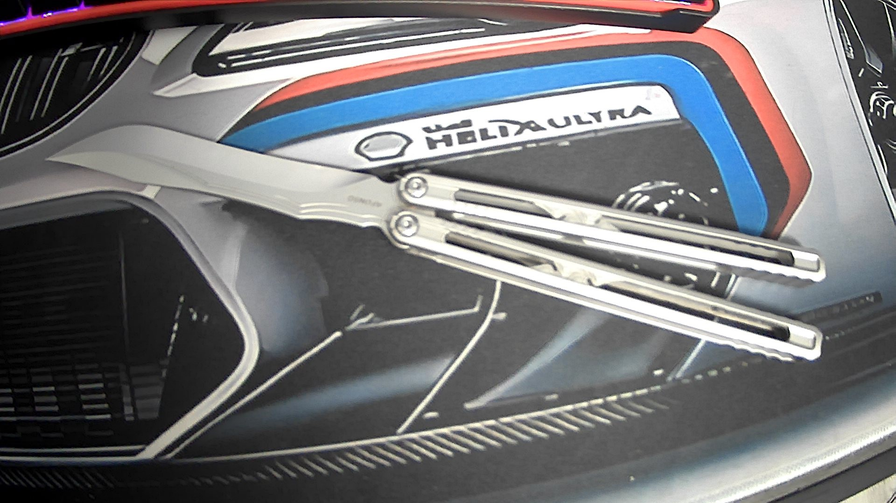

Justiça
Início
|
Acerca
|
Privacidade e Termos de Utilização
|
Creditos
Creditos:
Desenvolvedor:Afonso
idade:15
Gostos pessoais/experiencia pessoal:
Experiencia em c++(terminal),html/css(pouca),mecanica,animação no blender,modificar jogos(mods),Armas(airsoft) e Butterfly(Balisong)
Estudios indie que adoro: The Indie Stone|Amistech Games|Team Cherry
Adoro:mexer em jogos,programar,mecanica,carros,militar/airsoft,aviões,minha balisong.
